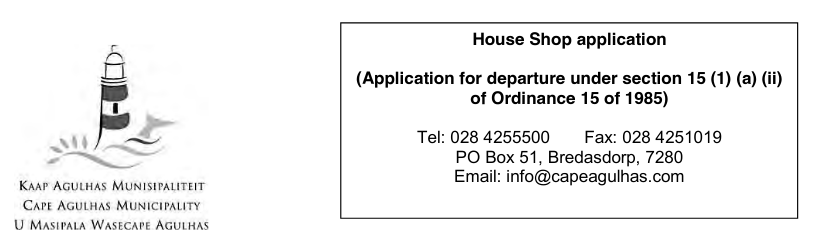
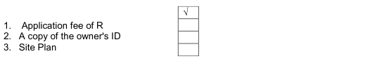

COVID-19 Regulations
Some municipal functions such as public transport, restaurant hours and liquor sales are impacted by recent national COVID-19 regulations.Read the COVID-19 regulations.
This is the latest version of this By-law.
Cape Agulhas
South Africa
South Africa
House Shops By-law, 2012
- Published in Western Cape Provincial Gazette no. 7075 on 14 December 2012
- Commenced on 14 December 2012
- [Up to date as at 28 May 2021]
1. Definitions
In this by-law, unless the context otherwise indicates, means:"authorized officer" means an employee of the Council appointed by the municipal manager to exercise the powers of an authorized official in terms of this by-law;"approval period" a maximum of five years under the Land Use Planning Ordinance No 15 of 1985, after which the applicant must re-apply for extension;"category one" a House shop operated for profit within existing structures, where formal advertising takes place, stock purchased and delivery takes place, business hours are maintained and the predominant use of the site is residential, with the house shop secondary;"category two" A House Shop where the predominant use of the site is for business purposes; stock is stored in bulk on site and shop owners overnight in the shop;"council" means the municipal council of the municipality;"house shop" the operation of a retail business from a dwelling or outbuilding for the convenience of the immediate community by the owner of the dwelling or outbuilding, who must occupy said building or dwelling, provided that the overall use of the dwelling will remain residential;"municipal manager" means a person who is appointed by the council under the Local Government: Municipal Structures Act, 1998 (Act 117 of 1998);"municipality" means the Municipality of Cape Agulhas;"national building regulations" means the National Building Regulations promulgated under the National Building Regulations and Building Standards Act 103 of 1977;"public nuisance" means any act, omission or condition that is materially unsightly, harmful or dangerous to the health, the ordinary comfort, convenience, peace or quiet of the public or adversely affect the safety of the public;"zoning scheme" zoning scheme promulgated in terms of the Land Use Planning Ordinance No 15 of 1985;"zoning scheme regulations" Section 7 and Section 8 Scheme Regulations under the Land Use Planning Ordinance No 15 of 1985.2. Application of this by-law
3. Classification of house shop
4. Applications for house shops
5. Requirements for a house shop
6. Restrictions
7. Non-liability of the municipality
The municipality is not liable for any loss or damage, direct or consequential, suffered or sustained by the owner of the House Shop as a result of the approval of the House Shop.8. Compliance notices
9. Application
10. Transitional arrangements
A person who can prove that the Council at the time of implementation of this by- law has already granted approval to a house shop may continue to act in accordance with the approval in terms of such law, provided that:(a)The provisions contained in the original approval remain in effect;(b)The initial approval will be valid only in respect of the premises for which it was approved, and(c)No approval from the original applicant to another person may be transferred.(d)The owner of the House Shop show evidence of Council approval.11. Delegation
The municipal manager may delegate any power or duty conferred to him/ her under the provisions of this by-law to any official of the municipality.12. Penalty clause
13. Short title and commencement
This By-Law is the Cape Agulhas Municipality By-law on House Shops and come into force on the date of the publication in the Provincial Gazette.14. Appendix A

Requirements:1. Please complete this form. Incomplete applications will not be accepted.2. Under the Council's policy, a person can only run a house shop from the house which he / she is the owner of and is occupied by himself / herself.3. A copy of the owner's ID document must be attached.4. An application fee, as determined by Council from time to time, must first be paid before the application will be considered. The fee is not refundable.5. A site plan, which indicates the relevant portion of the house shop that is clearly highlighted, must be attached.6. There is a waiting period of approximately three months.7. The approval of this application is subject to the requirements of the Council's policy, public participation and input from the relevant departments. The municipality is entitled to this application to check if it complies with all the requirements.A. Application details
1.Address / location of the property to which the application relates| Erf number | |
| Street Address | |
| Town |
| Yes | |
| Nee |
| Name and Surname | |
| ID number | |
| Postal address | |
| Telephone number |
| Bedroom | ||
| Lounge | ||
| Garage | ||
| Outside room | ||
| Any other | Specify: |
| 1. | 6. |
| 2. | 7. |
| 3. | 8. |
| 4. | 9. |
| 5. | 10. |
B. Statement
I, the undersigned hereby certify that the following documents are attached:
and that all the information that appears in this form, as well as the information on the appendices, are correct and complete and that the application is understood (Note the contents of the instructions).SIGNATURE:______________________________ DATE: ____________________FULL NAME:___________________________________________________________DATE APPLICATION HANDED IN AT MUNICIPALITY: ________________- Entire By-law
- Preface
- 1. Definitions
- 2. Application of this by-law
- 3. Classification of house shop
- 4. Applications for house shops
- 5. Requirements for a house shop
- 6. Restrictions
- 7. Non-liability of the municipality
- 8. Compliance notices
- 9. Application
- 10. Transitional arrangements
- 11. Delegation
- 12. Penalty clause
- 13. Short title and commencement
- 14. Appendix A
History of this By-law
-
14 December 2012 this version
Published in Western Cape Provincial Gazette no. 7075By-law commences.
Download for later
Download the current version of this By-law to read later on your desktop, e-reader or tablet.
Cape Agulhas